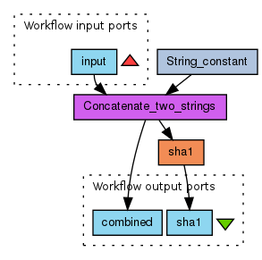

Specializing the PROV Ontology for Domain-specific Provenance Applications
The PROV Ontology [[PROV-O]] is the normative representation of the PROV Data Model (PROV-DM) [[PROV-DM]] using the Web Ontology Language (OWL2) [[!OWL2-PRIMER]]. The PROV Ontology is conceived as a reference ontology that can be extended by various domain-specific applications to model the required set of provenance terms. The PROV Ontology classes and properties can be specialized using the following two RDFS properties:
- rdfs:subClassOf: The property rdfs:subClassOf is an instance of rdf:Property that is used to state that all the instances of one class are instances of another [[!RDF-SCHEMA]]
- rdfs:subPropertyOf: "A rdfs:subPropertyOf axiom defines that the property is a subproperty of some other property" [[!RDF-SCHEMA]]
To illustrate the specialization mechanism, the PROV Ontology is extended to create an ontology schema for the provenance scenario describing the creation of the crime statistics file.
Modeling the Crime File Scenario
The example scenario can be encoded as a Resource Description Framework (RDF). For example,
- specialization of Agent to define a class called Journalist, which has individuals such as alice, bob, and edith
- Activity, e.g. FileCreation, FileAppending, and FileEditing
- specialization of Entity to define a class called CrimeFile, which has individuals such as e1, e2, and e3
Example given below describes the provenance of Entity e2 using RDF/XML syntax
<?xml version="1.0"?>
<rdf:RDF
xmlns:xsd="http://www.w3.org/2001/XMLSchema#"
xmlns:rdf="http://www.w3.org/1999/02/22-rdf-syntax-ns#"
xmlns:time="http://www.w3.org/2006/time#"
xmlns:prov="http://www.w3.org/ns/prov-o/"
xmlns:cf="http://www.example.com/crime#">
<rdf:Description rdf:about="http://www.example.com/crimeFile#e2">
<rdf:type rdf:resource="http://www.w3.org/ns/prov-o/Entity"/>
<rdf:type rdf:resource="http://www.example.com/crime#CrimeFile"/>
<prov:wasGeneratedBy>
<rdf:Description rdf:about="http://www.example.com/crimeFile#pe1">
<rdf:type rdf:resource="http://www.w3.org/ns/prov-o/Activity"/>
<rdf:type rdf:resource="http://www.example.com/crime#FileAppending"/>
<prov:wasControlledBy>
<rdf:Description rdf:about="http://www.example.com/crimeFile#Bob">
<rdf:type rdf:resource="http://www.example.com/crime#Journalist"/>
</rdf:Description>
</prov:wasControlledBy>
<prov:startedAt>
<rdf:Description rdf:about="http://www.example.com/crimeFile#t1">
<rdf:type rdf:resource="http://www.w3.org/2006/time#Instant"/>
<time:inXSDDateTime>2011-10-20T16:26:45Z</time:inXSDDateTime>
</rdf:Description>
</prov:startedAt>
<prov:endedAt>
<rdf:Description rdf:about="http://www.example.com/crimeFile#t3">
<rdf:type rdf:resource="http://www.w3.org/2006/time#Instant"/>
<time:inXSDDateTime>2011-11-21T18:36:52Z</time:inXSDDateTime>
</rdf:Description>
</prov:endedAt>
</rdf:Description>
</prov:wasGeneratedBy>
<prov:wasGeneratedAt>
<rdf:Description rdf:about="http://www.example.com/crimeFile#t2">
<rdf:type rdf:resource="http://www.w3.org/2006/time#Instant"/>
<time:inXSDDateTime>2011-10-20T17:14:12Z</time:inXSDDateTime>
</rdf:Description>
</prov:wasGeneratedAt>
<prov:wasDerivedFrom rdf:resource="http://www.example.com/crimeFile#e1"/>
<cf:hasLocation>
<rdf:Description rdf:about="http://www.example.com/crimeFile#sharedDirectoryLocation1">
<rdf:type rdf:resource="http://www.w3.org/ns/prov-o/Location"/>
<cf:hasFilePath rdf:datatype="http://www.w3.org/2001/XMLSchema#string">/share/crime.txt</cf:hasFilePath>
</rdf:Description>
</cf:hasLocation>
<cf:hasFileContent rdf:datatype="http://www.w3.org/2001/XMLSchema#string">There
was a lot of crime in London last month.</cf:hasFileContent>
</rdf:Description>
<rdf:Description rdf:about="http://www.example.com/crimeFile#pe2">
<rdf:type rdf:resource="http://www.w3.org/ns/prov-o/Activity"/>
<prov:used rdf:resource="http://www.example.com/crimeFile#e2"/>
</rdf:Description>
</rdf:RDF>
@prefix rdf: <http://www.w3.org/1999/02/22-rdf-syntax-ns#> .
@prefix xsd: <http://www.w3.org/2001/XMLSchema#> .
@prefix time: <http://www.w3.org/2006/time#> .
@prefix prov: <http://www.w3.org/ns/prov-o/> .
@prefix cf: <http://www.example.com/crime#> .
@prefix : <http://www.example.com/crimeFile#> .
:Bob
a cf:Journalist .
:e2
a cf:CrimeFile, prov:Entity ;
cf:hasFileContent "There was a lot of crime in London last month."^^xsd:string ;
cf:hasLocation :sharedDirectoryLocation1 ;
prov:wasDerivedFrom :e1 ;
prov:wasGeneratedAt :t2 ;
prov:wasGeneratedBy :pe1 .
:pe1
a cf:FileAppending, prov:Activity ;
prov:endedAt :t3 ;
prov:startedAt :t1 ;
prov:wasControlledBy :Bob .
:pe2
a prov:Activity ;
prov:used :e2 .
:sharedDirectoryLocation1
a prov:Location;
cf:hasFilePath "/share/crime.txt"^^xsd:string .
:t1
a time:Instant ;
time:inXSDDateTime "2011-10-20T16:26:45Z" .
:t2
a time:Instant ;
time:inXSDDateTime "2011-10-20T17:14:12Z" .
:t3
a time:Instant ;
time:inXSDDateTime "2011-11-21T18:36:52Z" .
Specialization of PROV Ontology Classes
The following new classes were created in the CrimeFile Ontology by extending the PROV ontology classes:
cf:Journalist
The cf:Journalist is a specialization of the PROV ontology Agent class and models all individuals that participate in creating, editing, and sharing the crime file.The following RDF/XML code illustrates how cf:Journalist is asserted to be a specialization of prov:Agent.
<rdf:Description rdf:about="http://www.example.com/crime#Journalist"> <rdfs:subClassOf rdf:resource="http://www.w3.org/ns/prov-o/Agent"/> </rdf:Description>
@prefix rdfs: <http://www.w3.org/2000/01/rdf-schema#> . @prefix prov: <http://www.w3.org/ns/prov-o/> . <http://www.example.com/crime#Journalist> rdfs:subClassOf prov:Agent .
cf:CrimeFile
The cf:CrimeFile is a specialization of the PROV ontology Entity class and it models the the file describing the crime statistics in the provenance scenario, including the multiple versions of the file. The following RDF/XML code illustrates how cf:Journalist is asserted to be a specialization of prov:Entity.
<rdf:Description rdf:about="http://www.example.com/crime#CrimeFile"> <rdfs:subClassOf rdf:resource="http://www.w3.org/ns/prov-o/Entity"/> </rdf:Description>
@prefix rdfs: <http://www.w3.org/2000/01/rdf-schema#> . @prefix prov: <http://www.w3.org/ns/prov-o/> . <http://www.example.com/crime#CrimeFile> rdfs:subClassOf prov:Entity .
cf:FileCreation, cf:FileEditing, cf:FileAppending, cf:Emailing, cf:SpellChecking
The classes cf:FileCreation, cf:FileEditing, cf:FileAppending, cf:Emailing, cf:SpellChecking are specialization of the PROV ontology Activity and model the different activities in the provenance scenario. The following RDF/XML code illustrates the specialization of the prov:Activity to define class cf:FileCreation (other classes can be similarly defined by using the subClassOf property).
<rdf:Description rdf:about="http://www.example.com/crime#FileCreation"> <rdfs:subClassOf rdf:resource="http://www.w3.org/ns/prov-o/Activity"/> </rdf:Description>
@prefix rdfs: <http://www.w3.org/2000/01/rdf-schema#> . @prefix prov: <http://www.w3.org/ns/prov-o/> . <http://www.example.com/crime#FileCreation> rdfs:subClassOf prov:Activity .
The following diagram illustrates the above class specializations:

Example extension of PROV ontology in order to describe the crime file scenario
Specialization of PROV Ontology Properties
The following new object property was created in the CrimeFile Ontology by extending the PROV ontology object property:
cf:hadFilePath
The property cf:hadFilePath is a specialization of the PROV ontology hadLocation object property and links the class CrimeFile to the FileDirectory class. The following RDF/XML code illustrates the use of rdfs:subPropertyOf to create hadFilePath property.
<rdf:Description rdf:about="http://www.example.com/crime#hadFilePath"> <rdfs:subPropertyOf rdf:resource="http://www.w3.org/ns/prov-o/hadLocation"/> </rdf:Description>
@prefix rdfs: <http://www.w3.org/2000/01/rdf-schema#> . @prefix prov: <http://www.w3.org/ns/prov-o/> . <http://www.example.com/crime#hadFilePath> rdfs:subPropertyOf prov:hadLocation .
The following diagram illustrates the above property specialization:

Example extension of PROV ontology in order to describe the crime file scenario
Modeling an Example Scientific Workflow Scenario
This section describes an example of extending the PROV ontology to create a provenance ontology for scientific workflows.
Scientific workflow systems allow the specification of a pipeline of processes which are linked from outputs to inputs. Such workflow definitions are typically created in a graphical user interface or interactive web application, and can then be enacted using particular inputs or parameters. Scientists in fields like bioinformatics, chemistry and physics use such workflows to perform repeated analysis by connecting together disparate set of domain-specific tools and services.
Capturing the provenance of executions in such a workflow system will typically include details of each of the process executions, such as its inputs and outputs, start and stop time, and should ultimately be able to describe the complete data lineage through the workflow for any returned output data.
This example is not attempting to be a complete or general ontology for asserting workflow provenance, but highlights how a particular application like a workflow system can express its domain specific attributes based on the PROV ontology.

Example extension of PROV ontology in order to describe
workflow provenance. This OWL ontology can be downloaded as
RDF/XML
and
Turtle
Workflow extensions to PROV classes
In order to describe workflow executions following the model above, the PROV ontology is extended with workflow-specific subclasses described below:
- wf:Process
- A subclass of prov:Activity to signify an execution of a process which wf:wasDefinedBy a a wf:ProcessDefinition, e.g. a workflow or a process in a workflow. A workflow process can also act as an prov:Agent when controlling nested process executions.
- wf:WorkflowEngine
- A subclass of prov:Agent to indicate that a workflow process was controlled by a workflow engine.
- wf:Value
- A subclass of prov:Entity, representing a value appearing in the workflow execution, it will typically be used or generated by wf:Process executions. The actual value can be provided as a literal with a wf:value property.
- wf:FileValue
- A wf:Value which has been read from a file. As an prov:Entity this represents an entity with both attributes wf:value and wf:file fixed, that is the entity describes the point when the given file contained the content. As the file might be read a while before the wf:Value is used by a wf:Process, at which point the file content might have changed, those values are declared as being derived from this file value using the wf:wasReadFrom property.
- wf:ValueAtPort
- A subclass of prov:QualifiedInvolvement, representing a value (given by wf:sawValue) observed at a given port in the workflow (given by wf:seenAtPort. This description is the range of wf:generatedValue and wf:usedValue on a wf:Process.
Workflow extensions to PROV properties
While for most cases subclassing will provide the additional expressionality the application needs, this example ontology also expands on the PROV ontology with more specific subproperties.
- wf:wasDefinedBy
- This sub-property of prov:hadRecipe links a wf:Process to the defining wf:ProcessDefinition. Thus, if there are multiple executions of the same workflow definition, each of the separate wf:Processes will link to the same definition.
- wf:ranInWorkflowEngine
- This subproperty of prov:wasControlledBy links a wf:Process to the wf:WorkflowEngine it was executed in. The engine instance might contain additional details such as which version of the workflow system was used.
- wf:wasLaunchedBy
- This second subproperty of prov:wasControlledBy links a wf:Process to a prov:Agent, indicating which person asked to execute the given wf:ProcessDefinition in the specified wf:WorkflowEngine.
- wf:wasSubActivityOf
-
This subproperty of prov:wasControlledBy links a
wf:Process to another prov:Process, indicating
this is a child execution
Should there be a general way to state subprocesses? -Stian
- wf:wasReadFrom
-
This subproperty of prov:wasDerivedFrom links a wf:Value to the wf:FileValue it was read from, typically when used as a workflow input. As described for wf:FileValue this distinction is done because at the time the workflow input is used in the workflow, the file input might be different and thus should not be described as an attribute of that wf:Value.
This property hints of an undescribed "Read file" process execution which is not described. This is therefore an example of how the provenance asserter is limiting the scope of its provenance. The engine knows that the file was read, but is not able or willing to provide any deeper assertions, because its primary scope is at the level of executing workflow definitions.
- wf:sawValue
- A subproperty of prov:hadQualifiedEntity which indicates that an wf:Value was wf:seenAtPort within an wf:ValueAtPort.
- wf:seenAtPort
- A subproperty of prov:hadRole indicating which wf:Port (in the workflow definition) a wf:ValueAtPort was seen at. Thus one can see at which output port a value was generated, or at which input port(s) it was used.
- wf:generatedValue
- A subproperty of prov:hadQualifiedGeneration, specifying which port we wf:sawValue and where it wf:wasSeenAtPort as it was generated. The domain of this property is wf:Process, the range wf:ValueAtPort (and implied prov:Generation)
- wf:usedValue
- A subproperty of prov:hadQualifiedUsage, specifying which port we wf:sawValue and where it wf:wasSeenAtPort as it was used. The domain of this property is wf:Process, the range wf:ValueAtPort (and implied prov:Usage)
- wf:sameValueAs
- A subproperty of prov:wasComplementOf and prov:wasDerivedFrom, specifying that an wf:Value was the same as another wf:Value. This is used to indicate that a value at an workflow output port is the same as the value at a processor output port, although they have different history of generation, they both represent the same wf:value and are the same "thing".
Example workflow
This is an example workflow which defines a workflow input input, three processes String_constant, Concatenate_two_strings and sha1, and finally two workflow outputs combined and sha1. When executed, it will execute from top to bottom, first concatenating the provided input with the string constant, which is returned on the combined output, but also provided to the sha1 process, which output is given to the other workflow port.
An example of abstract definition of this workflow can be seen as RDF/XML and Turtle
Example workflow run
This example shows how using the workflow extensions together with PROV can provide the provenance of executing the workflow defined above.
<rdf:RDF xmlns="http://www.example.com/scientific-workflow#"
xmlns:foaf="http://xmlns.com/foaf/0.1/"
xmlns:prov="http://www.w3.org/ns/prov-o/"
xmlns:rdf="http://www.w3.org/1999/02/22-rdf-syntax-ns#"
xmlns:time="http://www.w3.org/2006/time#"
xmlns:wf="http://www.example.com/scientific-workflow#">
<Process rdf:about="#workflowRun">
<ranInWorkflowEngine>
<WorkflowEngine rdf:about="#workflowEngine" />
</ranInWorkflowEngine>
<wasDefinedBy rdf:resource="http://www.example.com/workflow1#workflow"/>
<wasLaunchedBy>
<prov:Agent rdf:about="#aUser">
<rdf:type rdf:resource="http://xmlns.com/foaf/0.1/Person"/>
<foaf:name>Stian Soiland-Reyes</foaf:name>
</prov:Agent>
</wasLaunchedBy>
<prov:startedAt rdf:parseType="Resource">
<time:inDateTimeXSD>2011-10-21T09:20:15Z</time:inDateTimeXSD>
</prov:startedAt>
<prov:endedAt rdf:parseType="Resource">
<time:inDateTimeXSD>2011-10-21T09:23:32Z</time:inDateTimeXSD>
</prov:endedAt>
<wf:usedValue>
<prov:Usage>
<sawValue>
<Value rdf:about="#input">
<value>Steve</value>
<wasReadFrom>
<FileValue rdf:about="#inputFile">
<file>/tmp/myinput.txt</file>
<value>Steve</value>
</FileValue>
</wasReadFrom>
</Value>
</sawValue>
<seenAtPort rdf:resource="http://www.example.com/workflow1#inName"/>
<prov:hadTemporalValue rdf:parseType="Resource">
<time:inDateTimeXSD>2011-10-21T09:21:31Z</time:inDateTimeXSD>
</prov:hadTemporalValue>
</prov:Usage>
</wf:usedValue>
<wf:generatedValue>
<prov:Generation>
<sawValue>
<Value rdf:about="#sha1FromWorkflow">
<value>a33d1fb1658d4fbf017de59ab67437a3eb5ff50d</value>
<wf:sameValueAs rdf:resource="#sha1"/>
</Value>
</sawValue>
<wasSeenAt rdf:resource="http://www.example.com/workflow1#sha1"/>
</prov:Generation>
</wf:generatedValue>
</Process>
<Process rdf:about="#constant">
<wasDefinedBy rdf:resource="http://www.example.com/workflow1#String_Constant"/>
<wasSubActivityOf rdf:resource="#workflowRun"/>
<prov:startedAt>
<time:Instant rdf:about="#t0">
<time:inDateTimeXSD>2011-10-21T09:20:15Z</time:inDateTimeXSD>
</time:Instant>
</prov:startedAt>
<prov:endedAt rdf:resource="#t0"/>
<wf:generatedValue>
<prov:Generation>
<sawValue rdf:resource="http://www.example.com/workflow1#String_Constant_value"/>
<prov:hadQualifiedEntity>
<Value rdf:about="#hello">
<value>Hello, </value>
</Value>
</prov:hadQualifiedEntity>
<prov:hadTemporalValue rdf:resource="#t0"/>
</prov:Generation>
</wf:generatedValue>
</Process>
<Process rdf:about="#combine">
<wasDefinedBy rdf:resource="http://www.example.com/workflow1#cat"/>
<wasSubActivityOf rdf:resource="#workflowRun"/>
<prov:startedAt rdf:parseType="Resource">
<time:inDateTimeXSD>2011-10-21T09:20:20Z</time:inDateTimeXSD>
</prov:startedAt>
<prov:endedAt rdf:parseType="Resource">
<time:inDateTimeXSD>2011-10-21T09:20:25Z</time:inDateTimeXSD>
</prov:endedAt>
<wf:usedValue>
<prov:Usage>
<seenAtPort rdf:resource="http://www.example.com/workflow1#catIn1"/>
<prov:hadQualifiedEntity rdf:resource="#hello"/>
<prov:hadTemporalValue rdf:parseType="Resource">
<time:inDateTimeXSD>2011-10-21T09:20:21Z</time:inDateTimeXSD>
</prov:hadTemporalValue>
</prov:Usage>
</wf:usedValue>
<wf:usedValue>
<prov:Usage>
<sawValue rdf:resource="#input"/>
<seenAtPort rdf:resource="http://www.example.com/workflow1#catIn2"/>
<prov:hadTemporalValue rdf:parseType="Resource">
<time:inDateTimeXSD>2011-10-21T09:20:23Z</time:inDateTimeXSD>
</prov:hadTemporalValue>
</prov:Usage>
</wf:usedValue>
<wf:generatedValue>
<prov:Generation>
<sawValue>
<Value rdf:about="#combined">
<value>Hello, Steve</value>
</Value>
</sawValue>
<seenAtPort rdf:resource="http://www.example.com/workflow1#catOut"/>
</prov:Generation>
</wf:generatedValue>
</Process>
<Process rdf:about="#shasum">
<wasDefinedBy rdf:resource="http://www.example.com/workflow1#shasum"/>
<wasSubActivityOf rdf:resource="#workflowRun"/>
<prov:startedAt rdf:parseType="Resource">
<time:inDateTimeXSD>2011-10-21T09:20:30Z</time:inDateTimeXSD>
</prov:startedAt>
<prov:endedAt rdf:parseType="Resource">
<time:inDateTimeXSD>2011-10-21T09:21:00Z</time:inDateTimeXSD>
</prov:endedAt>
<wf:generatedValue>
<prov:Generation>
<sawValue>
<Value rdf:about="#sha1">
<value>a33d1fb1658d4fbf017de59ab67437a3eb5ff50d</value>
</Value>
</sawValue>
<wasSeenAt rdf:resource="http://www.example.com/workflow1#shaOut"/>
</prov:Generation>
</wf:generatedValue>
</Process>
</rdf:RDF>
Example available as
RDF/XML
and
Turtle
@prefix prov: <http://www.w3.org/ns/prov-o/> .
@prefix time: <http://www.w3.org/2006/time#> .
@prefix foaf: <http://xmlns.com/foaf/0.1/> .
@prefix wf: <http://www.example.com/scientific-workflow#> .
@prefix run: <http://www.example.com/run1#> .
@prefix : <http://example.com/aWorkflow> .
:workflowRun
a wf:Process ;
wf:wasDefinedBy <http://www.example.com/workflow1#workflow> ;
wf:usedValue [
a prov:Usage ;
wf:sawValue :input ;
wf:seenAtPort <http://www.example.com/workflow1#inName> ;
prov:hadTemporalValue [
time:inDateTimeXSD "2011-10-21T09:21:31Z"
]
] ;
wf:generatedValue [
a prov:Generation
wf:sawValue :sha1FromWorkflow ;
wf:wasSeenAt <http://www.example.com/workflow1#sha1> ;
] ;
wf:ranInWorkflowEngine :workflowEngine ;
wf:wasLaunchedBy :aUser ;
prov:endedAt [
time:inDateTimeXSD "2011-10-21T09:23:32Z"
] ;
prov:startedAt [
time:inDateTimeXSD "2011-10-21T09:20:15Z"
] .
:aUser
a prov:Agent, foaf:Person ;
foaf:name "Stian Soiland-Reyes" .
:combine
a wf:Process ;
wf:generatedValue [
a prov:Generation
wf:sawValue :combined ;
wf:seenAtPort <http://www.example.com/workflow1#catOut> ;
] ;
wf:usedValue [
a prov:Usage ;
wf:seenAtPort <http://www.example.com/workflow1#catIn1> ;
prov:hadQualifiedEntity :hello ;
prov:hadTemporalValue [
time:inDateTimeXSD "2011-10-21T09:20:21Z"
]
], [
a prov:Usage ;
wf:sawValue :input ;
wf:seenAtPort <http://www.example.com/workflow1#catIn2> ;
prov:hadTemporalValue [
time:inDateTimeXSD "2011-10-21T09:20:23Z"
]
] ;
wf:wasDefinedBy <http://www.example.com/workflow1#cat> ;
wf:wasSubProcessExecutionOf :workflowRun ;
prov:endedAt [
time:inDateTimeXSD "2011-10-21T09:20:25Z"
] ;
prov:startedAt [
time:inDateTimeXSD "2011-10-21T09:20:20Z"
] .
:combined
wf:value "Hello, Steve" ;
a wf:Value .
:constant
wf:generatedValue [
a prov:Generation ;
wf:sawValue <http://www.example.com/workflow1#String_Constant_value> ;
prov:hadQualifiedEntity :hello ;
prov:hadTemporalValue :t0
] ;
wf:wasDefinedBy <http://www.example.com/workflow1#String_Constant> ;
wf:wasSubProcessExecutionOf :workflowRun ;
a wf:Process ;
prov:endedAt :t0 ;
prov:startedAt :t0 .
:hello
wf:value "Hello, " ;
a wf:Value .
:input
wf:value "Steve" ;
wf:wasReadFrom :inputFile ;
a wf:Value .
:inputFile
wf:file "/tmp/myinput.txt" ;
wf:value "Steve" ;
a wf:FileValue .
:sha1
wf:value "a33d1fb1658d4fbf017de59ab67437a3eb5ff50d" ;
a wf:Value .
:sha1FromWorkflow
wf:sameValueAs :sha1 ;
wf:value "a33d1fb1658d4fbf017de59ab67437a3eb5ff50d" ;
a wf:Value .
:shasum
a wf:Process ;
wf:generatedValue [
wf:sawValue :sha1 ;
wf:wasSeenAt <http://www.example.com/workflow1#shaOut> ;
a prov:Generation
] ;
wf:wasDefinedBy <http://www.example.com/workflow1#shasum> ;
wf:wasSubProcessExecutionOf :workflowRun ;
prov:endedAt [
time:inDateTimeXSD "2011-10-21T09:21:00Z"
] ;
prov:startedAt [
time:inDateTimeXSD "2011-10-21T09:20:30Z"
] .
:t0
a time:Instant ;
time:inDateTimeXSD "2011-10-21T09:20:15Z" .
:workflowEngine
a wf:WorkflowEngine .
Note that for brevity, the example above does not show the inferred classes and properties from the PROV ontology. For interoperability, applications should also expressed such inferred statements in its serialisations, so that the provenance can be read without using OWL2 inferencing and the customized ontologies.
See the workflow-inferred.rdf for the complete example showing both domain-specific and PROV ontology terms used side by side.